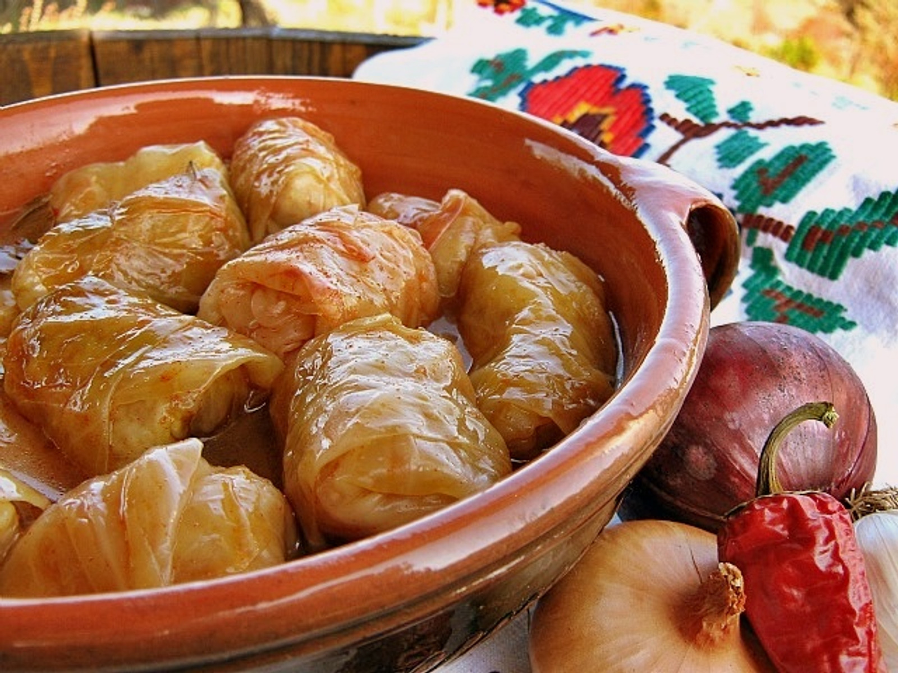

Recept za sarmu

Sarma je jedno jako fino jelo
Pogotovo preko zime
Sastojci
- Mljeveno meso
- Riza
- Paprike, veličina po želji
- Luk
- Začini
Postupak
- Izdinstati luk
- Na tom luku izdinstati meso
- Paprikama odrezati glavu i to napuniti smjesom riže, mesa i luka
- Sve zajedno kuhati u vodi taman da pokrije dok paprika nije kuhana